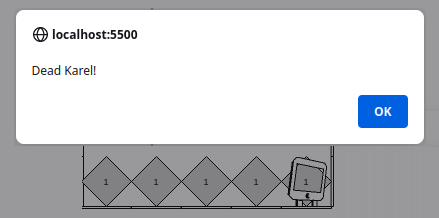

Karel
Karel is a little robot that looks a bit like an old iMac. On the following pages we will learn a lot from Karel. Although it seems trivial, in this chapter we probably learn the most important lesson of the whole book, namely to break down complex problems into simpler ones with the top-down approach.
A little note for people who already know how to program a bit: don't skip this chapter! In principle, this chapter is about learning and practicing the top-down approach with simple examples, getting used to a good coding style, and learn how to code without using variables.
.
Karel's World
Karel's world consists of streets and avenues. Streets run from west to east and avenues from south to north. Besides, there are walls Karel can't go through, and there are beepers. Karel always carries a bag with an infinite number of beepers, but beepers can also lie around anywhere in his world.
Karel knows only four commands:
- move(): he can move one step forward,
- turnLeft(): he can turn to the left,
- pickBeeper(): he can pick up a beeper, and
- putBeeper(): he can put a beeper down.
Although it doesn't look like much, it turns out that Karel can calculate anything there is to calculate, we say Karel is a 'universal computing machine'.
.
Karel learns to walk
If we want Karel to pick up the beeper at location (3,2) and carry it to location (5,2), we would tell him:
"Karel, take two steps forward, then pick up the beeper, turn left, move one step forward, turn three times to the left, move two more steps forward and put down the beeper."
Why should Karel turn three times to the left? Because he doesn't know how to 'turn to the right', nobody has ever shown him that.
Since Karel doesn't understand English, we have to talk to him in his language. which sounds like this:
move(); move(); pickBeeper(); turnLeft(); move(); turnLeft(); turnLeft(); turnLeft(); move(); move(); putBeeper();
Like nobody really understands why you need these funny punctuation marks in English (like commas, periods etc.), nobody knows why Karel needs these round brackets (called parentheses) and semicolons. But we can't do without them. Karel also pays meticulous attention to upper and lower case, if we make a typo he does nothing at all.
.
Karel Program
So for Karel to start his chores we need something called a 'program'. This is actually JavaScript, but we don't need to know that. A Karel program looks like this:
function run() {
move();
move();
pickBeeper();
turnLeft();
move();
turnLeft();
turnLeft();
turnLeft();
move();
putBeeper();
}
The part that is important for us is marked in blue. In all that follows we will simply insert our Karel commands (also called code) replacing the blue lines above. We don't care about the rest of the program.
.
Exercise: GoodMorningKarel
We want to solve our next Karel problem: Karel has just woken up and wants to drink his morning milk. However, the milk is still at the doorstep where the milkman left it. So Karel has to get up, go to the door, get the milk and then sit down at his breakfast table to drink his milk. How would that look in Karel's language?
.
Karel learns new Tricks
Karel is a bit like a pet and we can teach him new tricks. First, let's teach him to turn to the right. We tell him that every time he sees the turnRight() command, he should turn left three times. For Karel to understand us, we have to use his language:
function turnRight() {
turnLeft();
turnLeft();
turnLeft();
}
Now we can just use this new command and Karel understands what to do. Commands we sometimes also call functions, e.g. turnRight() is a function, but also move(). In general, functions are always indicated by parentheses.
Question: What should be the syntax for a turnAround() command that causes Karel to turn around and look in the opposite direction?
.
Exercise: GoodMorningKarel
To see that this really works, we want to modify our GoodMorningKarel so that it uses a turnRight() instead of three turnLeft()'s.
.
Karel repeats himself
It is very common that Karel should do something over and over again. For example, he should turn three times to the left or he should walk two steps. For this we have something called a loop, more precisely a 'for loop'. In Karel's language this looks like:
function turnRight() {
for (let i = 0; i < 3; i++) {
turnLeft();
}
}
What is important here is the '3', which tells Karel that he should do whatever is inside the curly brackets, three times. We do not need to understand the rest for the time being. (Very few people understand it, they just copy the lines and change the '3'.)
.
Exercise: FillRowKarel
Another application for our loop is FillRowKarel. We want Karel to put five beepers in a row. This actually seems to be a very simple problem, and one would think that the following lines
function run() {
for (let i = 0; i < 5; i++) {
putBeeper();
move();
}
}
should solve the problem.
However, we realize that Karel runs into the wall at the end and hurts himself. In the program we see that when the red window pops up in which Karel is stung by a wasp. To avoid this, we could only go through the loop four times. But then Karel would only put down four beepers and not five. This problem occurs so often that it has a name: it is called the O-Bob problem.
.
OBOB
O-Bob was a Jedi master who first noticed this problem when he tried to program his droid. Seriously, OBOB actually stands for 'off by one bug', usually one to few. In our FillRowKarel problem this means that Karel simply has to put an extra beeper in the end:
function run() {
for (let i = 0; i < 4; i++) {
putBeeper();
move();
}
putBeeper();
}
Right now, we have to live with that. In the next chapter we will see how the 'Loop-and-a-half' can be used to avoid the O-Bob problem elegantly.
.
Karel has Sensors
There's one little thing I haven't told you yet: Karel has sensors. For example, he can sense if there is a beeper at the location he is at the moment. So if we wanted Karel to pick up a beeper, if there is one, we could use the following Karel commands:
if ( beepersPresent() ) {
pickBeeper();
}
So Karel has another command, the if command.
Karel has a lot of sensors, the most important ones are:
- beepersPresent(): there is a beeper at the current location,
- noBeepersPresent(): there is no beeper at the current location,
- frontIsClear(): there is no wall in front of Karel, and
- frontIsBlocked(): there is a wall in front of Karel, so Karel should not try to move forward or he will hit his head.
Additionally, there are also sensors for rightIsClear() and leftIsClear(), together with their respective blocked variants. Right actually means down, and left actually means up, always relative to the direction in which Karel is looking.
.
Karel, go ahead
Very often we want Karel to do something until something happens. For example, as long as there is no wall in front of him, Karel should move straight. This is where Karel's while command comes in handy:
while ( frontIsClear() ) {
move();
}
i.e., as long as there is no wall in front of him, Karel should move straight. This construct is called the 'while loop'.
.
Exercise: WallKarel
How would a new command moveToWall() look like, which causes Karel to move to the next wall? In WallKarel we want to get Karel to walk straight until a wall comes up. We want to use our new command moveToWall(), because then the code becomes very simple and elegant.
This example leads us to our first Software Engineering Principles (SEP):
SEP: Programs should be readable by people and should look like relatively normal English.
.
.
Exercise: InfiniteLoopKarel
The while loop is not entirely unproblematic: because Karel does something until something special happens. In our InfiniteLoopKarel example, Karel should turn to the left until there is no more wall in front of him:
while ( frontIsClear() ) {
turnLeft();
}
This works well as long as Karel is somewhere next to a wall. But if Karel is in the middle of his world, he does not stop turning. This is then called an infinite loop or Merry-Go-Round Karel.
.
.
.
Exercise: RobinHoodKarel
Karel loves the movies. The other day he saw the movie 'Robin Hood'. According
to his motto 'take from the rich and give to the poor', Karel walks through his world and
every time there is a beeper in the streets he picks it up, and whenever there is no beeper, he puts
one down.
To do this, we can use Karel's sensors:
if ( beepersPresent() ) {
pickBeeper();
}
if ( noBeepersPresent() ) {
putBeeper();
}
If we put these lines inside our while loop above, then we almost solved our problem. It works fine if there is no beeper. However, if there is one, Karel first removes it. But then he sees that there is no beeper, and hence puts a beeper where he shouldn't. To solve this problem we need the else command:
if ( beepersPresent() ) {
pickBeeper();
} else {
putBeeper();
}
It reads like this: if there's a beeper pick it up, otherwise put one down.
.
Top-Down Approach
In principle, there are two ways to solve any problem. One is the bottom-up approach: starting
from the things you know, you try to solve the problem. So far we have used this approach to
solve our Karel problems: with the few commands Karel knows and his sensors, we have solved simple
problem step by step. For simple problems this works quite well.
For more complex problems, however, this no longer works very well. The top-down method
becomes extremely helpful here. In the top-down approach we usually have a problem, which
seems impossible to solve at first. However, one very often succeeds in breaking down the
complex problem into smaller sub-problems. Sometimes those can be solved directly, sometimes
those have to be broken down into even smaller sub-problems. This process is called
'stepwise refinement'. Let's take a look at the WindowCleaningKarel example, and
see how it works.
.
Exercise: WindowCleaningKarel
Karel lives in Chicago. And he makes a living by cleaning windows. The job is not
entirely harmless, since he is cleaning skyscrapers. Karel has to clean five skyscrapers a
week. They are not all the same, some are higher some are less high. Actually, Karel
likes the higher ones better, but they're more work.
We want to solve this problem using the top-down approach. It is therefore a question of
breaking down the big problem into smaller ones. Suppose we knew how Karel cleans one
skyscraper, so assume we had a function called cleanOneSkyScraper(). Then the
solution to our problem would be very simple, we would just use cleanOneSkyScraper() five times:
for (let i = 0; i < 5; i++) {
cleanOneSkyScraper();
}
So we've solved our big problem.
Now we have to solve the slightly smaller problem cleanOneSkyScraper(). How does Karel clean
one skyscraper? Still the problem is to complicated to solve it with move's and
turnLeft's. Hence, we need to break it down one more time. If we knew how Karel
moves up the skyscraper, moveUpAndClean(), moves over the skyscraper, moveOver(), and on the other
side then moves down the skyscraper again, moveDownAndClean(), then we would have solved the problem
cleanOneSkyScraper():
function cleanOneSkyscraper() {
moveUpAndClean();
moveOver();
moveDownAndClean();
}
Although we are not quite finished yet, we can see that we are basically done. We can easily solve the last three commands. For moveUpAndClean(), we let Karel turn to the left, and then let him move as long as his right side is blocked. For moveOver(), we let Karel turn right, move two steps forward and then turn right again. moveDownAndClean() is actually like moveToWall(), but at the end he has to turn left once more.
.
Recommendations for the Top-Down Approach
Sometimes it is not quite clear when the top-down approach is finished. Here are a few recommendations to help you:
- one function should solve exactly one problem,
- a function should not have more than 15 lines of code, around five lines is ideal, and
- function names should describe what the function does.
.
Comments
Every good program has comments. The more important it is, the more comments it has.
What are comments? Comments are descriptions of what the program, what the code does.
They are intended for people who are trying to understand the program. The computer ignores
the comments.
The syntax is actually quite simple: a comment starts with the characters '/**' and ends
with the characters '*/'. Usually a comment is located at the very beginning of a
program and explains what the program as a whole does. In addition, you should briefly
describe what each function does. If you want to do it really well, then you also describe
briefly which assumptions you make when the function is called (pre-conditions) and in what state
you leave the world after the function is finished (post-conditions).
/**
* Karel has to clean five skyscrapers, one at a time.
*
* PreCondition: Karel is standing in front of the first skyscraper, facing
* east <br/>
* PostCondition: Karel is standing behind the last skyscraper, facing east
*/
function run() {
for (let i = 0; i < 5; i++) {
cleanOneSkyscraper();
}
}
/**
* Karel has to clean one skyscraper
*
* PreCondition: Karel is standing in front of the one skyscraper, facing
* east <br/>
* PostCondition: Karel is standing behind this one skyscraper, facing east
*/
function cleanOneSkyscraper() {
moveUpAndClean();
moveOver();
moveDownAndClean();
}
...
If the functions are kept short, comments within functions are not necessary. Again, the point is that programs should read like good English.
.
Exercise: Comments
As a little exercise, we want to add detailed comments to the WindowCleaningKarel program. For all future programs we write, we should get used to adding a little comment to each program and function. This makes the programs easier to understand (for people).
.
Review
In this chapter we have taken our first programming steps by helping Karel to solve his problems. In addition,
- we have taught Karel new commands, also called functions, e.g. moveToWall(),
- we let Karel repeat things with the for loop, e.g. make three steps forward,
- we have seen that Karel has sensors and we got to know the if statement,
- we learned about the while loop,
- we acquainted ourselves with our first software engineering principles,
- we made our first programming errors, e.g. the OBOB and the infinite loop,
- and we learned about comments.
But the most important thing we learned in this chapter was the top-down approach. Its goal is to break down a big problem into smaller ones, and to repeat this until each sub-problem is easy to solve. This approach can be applied not only to programming problems, but also to solve problems in all possible other fields.
.
Projects
We know enough about Karel now to help him solve any problems he may have. In the book by Pavel Solin [4] there are many more Karel examples.
.
WritingKarel
Karel learned to write in school. His favorite letter is the 'K'. So we want to help Karel write his favorite letter using the top-down approach.
.
.
.
.
AdventureKarel
Karel is not a coward, on the contrary, he loves adventures. But that can be quite dangerous sometimes. The other day he was at the White Cliffs of Dover. Of course he wants to get as close as possible, but he doesn't want to fall over either (Karel can't swim). What makes this problem hard is that we don't know how far the cliffs are.
.
.
.
.
 Try it
Try itPartyKarel
Karel lives in a flat, which he shares with his brother SuperKarel. Both love parties and
after the last one it looks like cabbage and turnips in their apartment. Tonight Karel's
parents are coming to visit, so he has to clean up. Let's help Karel fix his apartment by
cleaning up all the beepers lying around.
The part that makes this program a bit complicated is that Karel should stop after cleaning
everything up.
.
.
.
EasterEggKarel
Karel loves Easter and searching for Easter eggs. His parents were hiding them all over the
garden, so we'll help Karel collect all the Easter eggs. Since he will visits his
grandparents later, and their garden is much larger, the program must also work for gardens of
different sizes.
Again, we want to make sure Karel stops when he is finished.
.
.
.
.
TulipKarel
Karel has Dutch ancestors, that's why he loves tulips. And every winter he plants tulip bulbs, so that his garden is full of tulips again in spring. Let's help Karel with planting the tulips, but using the top-down approach. Since Karel also plants tulips for his parents and grandparents, our program has to work for differently sized gardens.
.
.
.
.
BuilderKarel
From time to time there are tornadoes in Chicago. The last one got Karel's house. It is still standing but the pillars have gotten some damage and have to be repaired. In Karel's house there are three pillars, which are of course made of beepers. The three pillars are three steps apart, but could be of different heights. Let's help Karel repair his house, of course with the top-down approach.
.
.
.
PyramidKarel
We have already heard that Karel is a little adventurer. The other day he saw a report on TV about the pyramids, and of course he has to build one in his garden immediately. Since he wants to build several, of different sizes, our program should work in worlds with different sizes as well, so it makes sense to use the top-down approach again.
.
.
.
.
.
.
YardstickKarel
Karel is not quite as stupid as he looks. He can actually count even though he has no fingers
(or variables). Karel counts with beepers. In this example he is supposed to measure how
long the yardstick in front of him is. So we want him to put as many beepers as the yardstick
is long, at the end of the street he is standing on.
We can assume that Karel is standing just before the yardstick.
.
.
.
.
DoubleBeeperKarel
Karel can also do math. In this example he should double the number of beepers lying on the pile in front of him. After being finished, we want Karel to stand in front of the pile again. Very important: Karel does not know about variables, and although he can count (see last example) this does not really help. Furthermore, the program should work for any number of beepers.
The easiest way to solve this problem is the top-down approach. How about turning one beeper into two? And you do that until there are no more beepers.
Question: What would the code look like if Karel is to triple or halve the number of beepers?
So Karel can do any of the basic arithmetic operations, and with those he can actually calculate anything there is to be calculated, one also says Karel is a Universal Computing Machine.
.
DonkeyKongKarel
Karel likes to play computer games when not cleaning windows. Preferably the classic arcade games of the 80's. His favorite game is Donkey Kong. This game is about collecting as many beepers as possible and moving from one level to the next. The exit is at the top right and we can assume that one level consists of nine floors.
Of course we use the top-down approach again.
.
.
BreadcrumbKarel
Karel read about the Cretan princess Ariadne and how she helped Theseus to escape the labyrinth of the Minotaur. So he thought he could do the same thing using breadcrumbs.
.
.
.
Questions
-
Name the four most important commands of Karel.
-
Give an example of an Off By One Bug (OBOB).
-
In the exercise "PartyKarel" you taught Karel how to clean up. Explain briefly how
Karel will clean up the beeper chaos. (No code required, just outline your procedure in
words)
-
Like 3) only with PyramidKarel, DoubleBeepersKarel, WindowCleaningKarel,...
-
In the lecture we got to know recommendations for the top-down approach. These are rules
regarding the names of functions, how many lines of code a function should have, etc. Name two
of these guidelines.
-
What are comments good for?
-
What is the difference between bottom-up design and top-down design? Which is
preferable?
-
Karel watched the film 'Robin Hood' and was totally impressed by the hero. That is why
he wants to follow his example "take from the rich and give to the poor". So you
should write a Karel program in which Karel picks up a beeper when he finds one and puts one
down when there is none. To solve the problem, you may make the following assumptions
about the world:
• The world is at least 3x3.
• At the start, Karel stands at the corner of 1st Street and 1st Avenue, looking east and has an infinite number of beepers in his beeper bag.
Make sure that you only use Karel commands.
.
References
The idea behind Karel comes from Rich Pattis, a former student of Stanford University [1]. The name 'Karel' is inspired by the first name of the Czech writer Karel Capek in whose play R.U.R. (Rossum's Universal Robots) the word 'robot' appears for the first time [2]. More details about Karel with many examples can be found in the Karel Reader [3]. Many of the examples used here are from the Karel Reader [3] and the Stanford Lecture 'Programming Methodologies' [4]. Even more Karel examples can be found in the book by Pavel Solin [5].
[1] Karel the Robot: A Gentle Introduction to the Art of Programming by R.E. Pattis
[2] Seite „Karel Čapek“. In: Wikipedia, Die freie Enzyklopädie. URL: https://de.wikipedia.org/w/index.php?title=Karel_%C4%8Capek&oldid=148374315
[3] KAREL THE ROBOT LEARNS JAVA, von Eric Roberts
[4] CS106A - Programming Methodology - Stanford University, https://see.stanford.edu/Course/CS106A
[5] Learn How to Think with Karel the Robot, von Pavel Solin, http://femhub.com/pavel/work/textbook-1.pdf
.